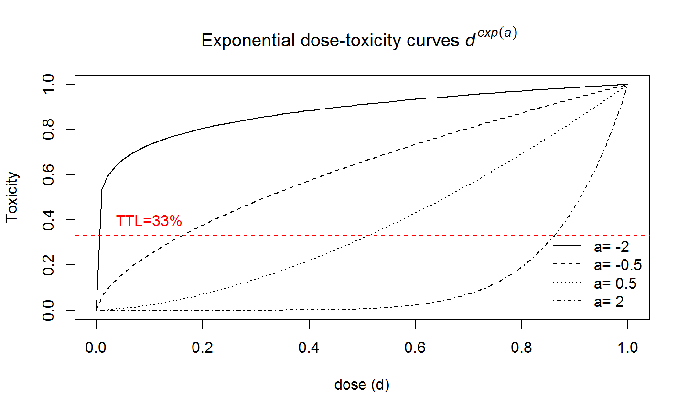

Phases of drug development process
Phase I study
Goal: the first step in evaluating a potential new agent is to determine a dose having an acceptable level of toxicity.
- Key elements:
- the starting dose \(d_{start}\)
- the dose-limiting toxicity (DLT)
- the target toxicity level (TTL)
- a dose escalation scheme consisting of
- a dose increment
- a dose assignment
- a cohort size
Dose levels have historically been chosen according to some variation of a Fibonacci sequence. A Fibonacci sequence is a sequence of numbers where each number is the sum of the two previous numbers in the sequence; an example is {1,1,2,3,5,8,…}.
Based on dose assignment, phase I trials can be classified into rule-based methods and model-based methods
Rule based designs
- Traditional 3+3 design
- If none of the first 3 patients experiences a DLT at \(d_{start}\) \(=>\) 3 more patients will be treated at the next higher dose level (escalation).
- If 1 of the first 3 patients experiences a DLT \(=>\) 3 more patients will be treated at the same dose level.
- If 2 or 3 patients out of 3 experience a DLT \(=>\) 3 more patients will be treated at the next lower dose level (de-escalation).
- The dose escalation/de-escalation continues but stops as soon as at least 2 patients experience DLTs, among a total of up to 6 patients (i.e. probability of DLT at the dose¸ 33%).
Rule based designs
Example
| Cohort | Dose 1 | Dose 2 | Dose 3 | Dose 4 |
|---|---|---|---|---|
| 1 | 0/3 | |||
| 2 | 1/3 | |||
| 3 | 0/3 | |||
| 4 | 1/3 | |||
| 5 | 1/3 |
Rule based designs
- Alternative statistical approaches are needed to make a better use of the complex data generated by phase I trials. Their applications require a close collaboration between all actors of early phase clinical trials (Paoletti et al, 2015).
Model based
- Model-based methods for finding the MTD assume that there is a monotonic dose-toxicity relationship. In this approach, a dose-toxicity curve as well as the TTL are explicitly defined.
- The goal for the phase I clinical trial is, through treating patients in a dose escalation fashion, to seek a suitable quantile of the dose-toxicity curve; specifically,a dose that will induce a probability of DLT at a specified TTL.
- This method is most conveniently carried out under the Bayesian framework. Simple one- or two- parameter parametric models are often used to characterize the dose-toxicity relationship, with the Bayesian posterior distribution used to estimate the parameters.
Model based

Model based
The continual reassessment method (CRM) seems to have been the first Bayesian model-based phase I design introduced in the literature (O'Quigley et al, 1990).
Many modifications were proposed to overcome its greatest weakness - i.e. its potential for exposing patients to overly toxic doses if the first few patient responses are atypical or the model is misspecified - and its limitations such as the use of a single binary endpoint. See Berry et al (2011) for a review.
Phase II studies
After the toxicity profile and/or the MTD for a treatment has been investigated, phase II studies are conducted at the MTD or an optimal biological dose estimated from phase I.
- Goal: to examine whether a drug has sufficient efficacy to warrant further developmentand and to refine knowledge of its toxicity profile.
- Phase IIA is single arm
- Phase IIB is multi-arm
Phase IIA designs
To provide an initial efficacy assessment, a phase IIA trial is often designed as a single-arm,open-label study that requires treating 40 to 100 patients in a multistage setting.
The primary endpoint is often a binary endpoint of response/no response or success/failure.
Multi-stage designs are useful here for early stopping due to lack of efficacy should the interim data indicate that the study drug is inefficacious.
Phase IIA designs
- Simon (1989) optimal and minimax designs:
- Optimal design minimize the expected sample size under the null hypothesis; minimax design can be constructed that minimizes the maximum trial sample size.
- After the inclusion of a pre-determined number of patients, \(n_{1}\), the trial is paused, and the response rate is evaluated.
- If a pre-specified minimal response rate, \(r_{1}/n_{1}\) has not been achieved, the treatment is not worth pursuing and the trial is ended.
- Otherwise, enrollment continues until a pre-determined number \(n\) of additional patients are accrued. The drug will be declared effective or ineffective depending on the achievement of an overall response rate\(r/n\).
- Optimal design minimize the expected sample size under the null hypothesis; minimax design can be constructed that minimizes the maximum trial sample size.
Phase IIB designs
After passing the initial efficacy assessment of a new agent in a phase IIA study, the subsequent phase IIB trial is often a randomized, multi-arm study.
Phase IIB trials are by definition smaller and less definitive than phase III trials.
They use earlier endpoints, such as disease-free survival, rather than overall survival in order to shorten study duration.
They also often have larger Type I and Type II error rates than their phase III counterparts.
They do not yield sufficient statistical power for a head-to-head comparison between the treatment arms.
References
Paoletti X, Ezzalfani M, Le Tourneau C. Statistical controversies in clinical research: requiem for the 3 + 3 design for phase I trials. Ann Oncol 2015 Jun 18. pii: mdv266.
O'Quigley J, Pepe M, Fisher L. Continual reassessment method: a practical design for phase I clinical trials in cancer. Biometrics 1990; 46: 33-48.
Simon R. Optimal two-stage designs for phase II clinical trials. Control Clin Trials 1989; 10: 1-10.
Berry S.M., Carlin B.P., Lee J.J. , Muller P. Bayesian Adaptive Methods for Clinical Trials. 2011 Chapman & Hall.